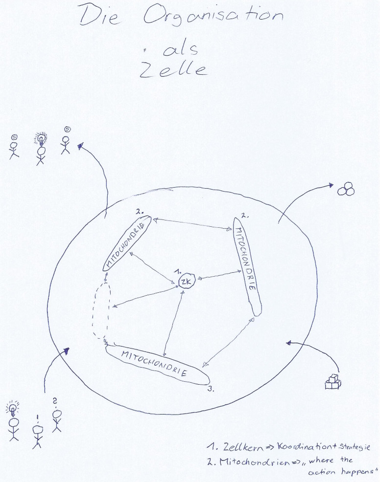
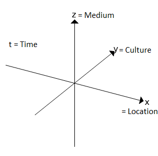
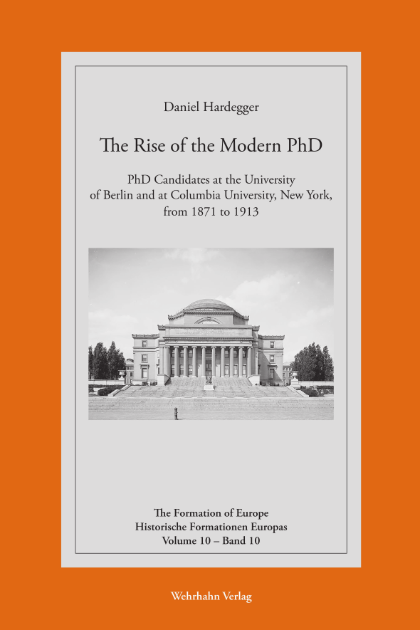
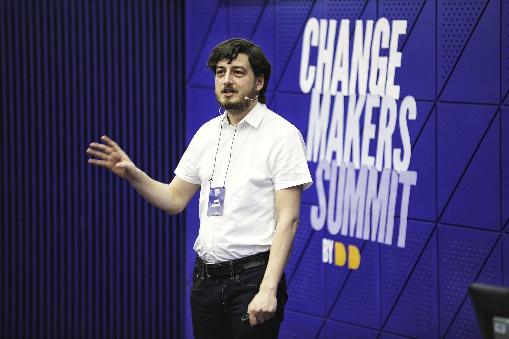

Daniel Hardegger
Wissenschaftlicher Mitarbeiter, Institut für Regulierung und Wettbewerb, ZHAW School of Management and Law
Senior AI & Compliance Specialist, Compliance Solutions GmbH
Research associate, Institute for Regulation and Competition, ZHAW School of Management and Law
Senior AI & Compliance Specialist, Compliance Solutions GmbH
Woran ich arbeite
What I work on
Ich arbeite an drei Dingen: am 4th Space als Konzept für hybride Gemeinschaften – wie diese entstehen und sich verändern; an Werkzeugen, mit denen Organisationen KI rechtlich und strukturell einsetzen, umsetzen und integrieren können; und an der Lehre für Juristen, wie sie in der hybriden Gesellschaft ihre Inhalte zielgruppenorientiert kommunizieren.
All das verbindet eine Frage: Wie bleibt eine hybride Gesellschaft, die gleichzeitig in der realen Welt («actual world») und in der digitalen Welt existiert, offen für neue Ideen, Impulse und Menschen, ohne sich aufgrund ihrer Beliebigkeit aufzulösen?

Ein Gedanke dabei ist, dass eine Gemeinschaft wie eine Zelle ist. Sie braucht eine Membran, die durchlässig ist: Impulse, seien es Ideen oder neue Mitglieder, und Energie müssen hinein, Ergebnisse wieder hinaus. Aber ohne die Membran als sinnstiftende Vision und ohne innere Struktur zur Lösung von Konflikten löst sie sich auf. Ich habe das seit dem Studium in der Praxis gesehen – in UN-Simulationen, in den Netzwerken JUNES, GSUN und UNYANET, in Polis180 – und in meiner Dissertation bei Doktoranden um 1900: Jedes Mal entstand eine Gruppe, die sich über Länder verteilt, über Medien verbindet, eigene Kodizes schafft und ihre eigene Balance aus Offenheit und Ordnung findet. Der 4th Space beschreibt, wovon diese Balance abhängt: von Ort, Medium, Kultur und Zeit.

Zelle und 4th Space gehören zusammen: Die Zelle beschreibt, wie eine Gemeinschaft funktioniert – Membran, Vision, innere Struktur. Der 4th Space beschreibt, wie sie sich zwischen der actual world und der digitalen Welt koppelt. KI verändert beides. Sie ist ein neuer Impuls, der durch die Membran kommt, und ein neuer Akteur im 4th Space. Das lässt sich gestalten, und dafür braucht es Konzepte und Werkzeuge.
I work on three things: the 4th Space as a concept for hybrid communities – how they emerge and change; tools that let organisations deploy, implement and integrate AI in legally and structurally sound ways; and teaching lawyers how to communicate their content to the audiences of a hybrid society.
One question connects all of it: how does a hybrid society – one that exists in the actual world and the digital world at the same time – stay open to new ideas, impulses and people without dissolving into arbitrariness?
One idea is that a community is like a cell. It needs a membrane that is permeable: impulses – ideas or new members – and energy must get in, results must get out. But without the membrane as a shared vision, and without an inner structure for resolving conflict, it dissolves. I have seen this in practice since my student days – in UN simulations, in the networks JUNES, GSUN and UNYANET, in Polis180 – and in my doctoral research on PhD candidates around 1900. Each time, a group emerged that spreads across countries, connects through media, creates its own codes and finds its own balance between openness and order. The 4th Space describes what that balance depends on: location, medium, culture and time.
The cell and the 4th Space belong together: the cell describes how a community functions – membrane, vision, inner structure. The 4th Space describes how it couples the actual world and the digital world. AI changes both. It is a new impulse coming through the membrane, and a new actor in the 4th Space. That can be shaped, and shaping it takes concepts and tools.
Fragen, an denen ich arbeite
Questions I work on
- Gibt es Zellen, die nur aus KIs bestehen – und was bedeutet das für uns als Gesellschaft?
- Wie integrieren wir KI in eine Zelle, und was verändert sich dabei an Membran und Struktur?
- Wie machen wir KI-Agenten im 4th Space sichtbar?
- Was passiert, wenn KI in physischer Form in die actual world übertritt?
- Wie kommunizieren Juristen in einer hybriden Gesellschaft so, dass ihre Inhalte die Zelle erreichen, für die sie gedacht sind?
- Are there cells made up only of AIs – and what does that mean for us as a society?
- How do we integrate AI into a cell, and what changes in its membrane and structure?
- How do we make AI agents visible in the 4th Space?
- What happens when AI enters the actual world in physical form?
- How do lawyers communicate in a hybrid society so that their content reaches the cell it is meant for?
Die Werkzeuge für Organisationen und die Lehre für Juristen sind zwei Antworten darauf, wie eine Gemeinschaft diese Veränderung selbst gestaltet.
The tools for organisations and the teaching for lawyers are two answers to how a community shapes this change itself.
Projekte
Projects
Sechzehn Projektförderungen seit 2018, unter anderem von Innosuisse, dem Schweizerischen Nationalfonds, der Europäischen Union und dem Digital Futures Fund der ZHAW. Auswahl:
Sixteen funded projects since 2018, including from Innosuisse, the Swiss National Science Foundation, the European Union and ZHAW's Digital Futures Fund. Selection:
- 2026LAGO – AI Governance in der Vierländerregion Bodensee, mit HTWG Konstanz und HFU FurtwangenLAGO – AI governance in the Lake Constance region, with HTWG Konstanz and HFU Furtwangen
- 2026From Coaching Mate to MultiMate – KI-Plattform für Lehre und Coaching an der ZHAWFrom Coaching Mate to MultiMate – AI platform for teaching and coaching at ZHAW
- 2025Advancing Applied Collaborative Interdisciplinary Research on Social Cohesion and AI – SNF-NetzwerkprojektAdvancing Applied Collaborative Interdisciplinary Research on Social Cohesion and AI – SNSF network project
- 2025The Future of Teaching: Combining AI and the Community of Coaches – ZHAW SMLThe Future of Teaching: Combining AI and the Community of Coaches – ZHAW SML
- 2023Legal Communication, Public Relations and Public Affairs – STARLIGHT-Programm der Hertie School, EU-gefördertLegal Communication, Public Relations and Public Affairs – Hertie School STARLIGHT programme, EU-funded
- 2023Neutralität der Behördenkommunikation – ZHAW SMLNeutrality of Authority Communication – ZHAW SML
- 2021CAS Litigation-PR und CAS Virtual Negotiations – hybride Weiterbildungsprogramme auf edXCAS Litigation PR and CAS Virtual Negotiations – hybrid continuing-education programmes on edX
- 2021Ganzheitliches Konzept für hybride Veranstaltungen an Hochschulen – Digital Futures Fund, ZHAW digitalHolistic concept for hybrid events at higher-education institutions – Digital Futures Fund, ZHAW digital
- 2020Digitales Compliance-Management-System für KMU – Innosuisse, mit dem Schweizerischen BaumeisterverbandDigital compliance management system for SMEs – Innosuisse, with the Swiss Master Builders Association
Dazu das internationale Forschungsnetzwerk zum 4th Space mit Partnern in neun Ländern (Anträge bei CHANSE, COST und SNF) und Negotiations.CH, ein Netzwerk von Verhandlungsspezialisten.
Plus the international 4th Space research network with partners in nine countries (proposals to CHANSE, COST and SNSF) and Negotiations.CH, a network of negotiation specialists.
Publikationen
Publications
- 2026Von «Human in the Loop» zu «Society in the Loop»: Warum die Schweizer Justiz transparente KI-Standards braucht. Schweizer Richterzeitung, 1/2026.
- 2024Compliance und Generative AI: Ethik an der Schnittstelle von Technologie und Unternehmensführung. Recht relevant. für Compliance Officers, 02/2024, Schulthess.
- 2023Zwischen Diskretion und Dialog: Herausforderungen und Lösungen für die Justizkommunikation in der «Post-Digitalisierung». Schweizer Richterzeitung, 4/2023.
- 2022A First Holistic "4th Space" Concept. Proceedings 81(1), 72. IS4SI Summit 2021.
- 2022Privacy and Transparency in the 4th Space: Implications for Conspiracy Theories. With Christoph M. Abels. Filozofia i Nauka 10, 187–212.
- 2020

The Rise of the Modern PhD. The Formation of Europe, Vol. 10. Wehrhahn Verlag, Hannover. Publizierte Dissertation, London School of Economics.Published doctoral thesis, London School of Economics.
Vollständige Liste auf ORCID und ResearchGate.
Full list on ORCID and ResearchGate.
Werdegang
Background

- seit 2024
- since 2024
- Senior AI & Compliance Specialist, Compliance Solutions GmbH
- seit 2023
- since 2023
- Dozent «Legal Writing and Communication», ZHAW SML; Dozent «Legal Communication and Public Relations», STARLIGHT-Programm, Hertie School Berlin
- Lecturer in "Legal Writing and Communication", ZHAW SML; lecturer in "Legal Communication and Public Relations", STARLIGHT programme, Hertie School Berlin
- seit 2022
- since 2022
- Co-Track-Chair «Digital Transformation and Hybrid Society», EURAM-Jahreskonferenz
- Co-track chair "Digital Transformation and Hybrid Society", annual EURAM conference
- seit 2019
- since 2019
- Wissenschaftlicher Mitarbeiter, Institut für Regulierung und Wettbewerb, ZHAW School of Management and Law
- Research associate, Institute for Regulation and Competition, ZHAW School of Management and Law
- 2020–2021
- Visiting Scholar, Hasso-Plattner-Institut, Potsdam
- 2018–2020
- Business Development Manager, Novamondo GmbH, Berlin
- 2016–2023
- Mitgründer und Co-Chair der Litigation-PR-Tagung, ZHAW School of Management and Law
- Co-founder and co-chair of the Litigation PR Conference, ZHAW School of Management and Law
- seit 2015
- since 2015
- Mitgründer und Vorstand für strategische Entwicklung, Polis180 e.V., Grassroots-Think-Tank für Aussen- und Europapolitik, Berlin – Best New German Think Tank 2016 (Global Go To Think Tank Index); Europapreis «Blauer Bär» der Stadt Berlin 2018
- Co-founder and board member for strategic development, Polis180 e.V., grassroots think tank for foreign and European policy, Berlin – Best New German Think Tank 2016 (Global Go To Think Tank Index); "Blauer Bär" European Prize of the City of Berlin 2018
- 2011–2018
- PhD International History, London School of Economics and Political Science; Gastforscher an der Columbia University (2013–2015) und der Humboldt-Universität zu Berlin (2014–2015)
- PhD in International History, London School of Economics and Political Science; visiting scholar at Columbia University (2013–2015) and Humboldt University of Berlin (2014–2015)
- 2005–2011
- BA und MA Geschichte und Germanistik, Universität Bern; Erasmus-Jahr an der Freien Universität Berlin. Model United Nations; Mitgründer der Netzwerke JUNES (Schweiz) und UNYANET (international), Vorstandsmitglied von GSUN
- BA and MA in History and German Studies, University of Bern; Erasmus year at Freie Universität Berlin. Model United Nations; co-founder of the networks JUNES (Switzerland) and UNYANET (international), board member of GSUN
Kontakt
Contact
daniel@hardegger.eu – LinkedIn. Ich arbeite in Berlin und in der Ostschweiz.
daniel@hardegger.eu – LinkedIn. I work from Berlin and eastern Switzerland.